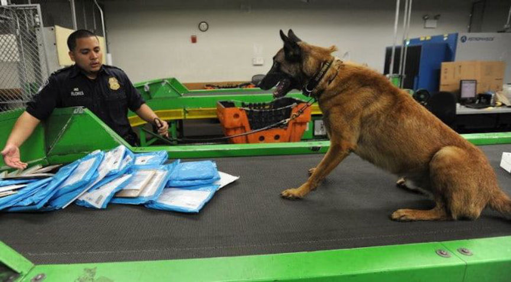
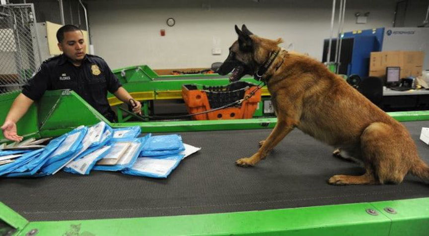

Dealer Sentenced for Reselling MDMA, LSD, and Psilocybin
United States District Court Judge C.J. Williams sentenced an Iowa man to more than six years in prison for reselling drugs purchased on the darkweb.
Jack Arthur Stumberg of Grundy Center, Iowa, pleaded guilty to one count of conspiring to distribute controlled substances and one count of possessing with intent to distribute controlled substances in December 2019.
A two-count indictment filed in August 2019 accused Stumberg and an accomplice of conspiring to distribute MDMA, LSD, and Psilocybin. In addition to the distribution conspiracy, the indictment charged Stumberg with possession of MDMA and LSD with the intent to distribute.
According to court documents, Postal Inspectors with the United States Postal Inspection Service intercepted a suspicious package addressed to Stumberg’s residence and one addressed to his accomplice’s home in March 2019. Instead of waiting on a search warrant, investigators obtained probable cause after a “trained K-9” hit on the packages. Postal Inspectors found 15 cannabis oil vape cartridges in both packages.

Law enforcement received tips about Stumberg as early as 2018, according to court documents. Investigators pointed to a Snapchat post from Stumberg that advertised Xanax in both liquid and blotter form.
Investigators executed a search warrant at Stumberg’s residence where they seized ecstasy and an assortment of drug-related items. The police arrested Stumberg and his accomplice in September 2019. During the execution of a search warrant at Stumberg’s home, investigators recovered evidence that linked Stumberg to darkweb drug purchases. Evidence indicated that Stumberg had ordered large quantities of drugs on the darkweb between 2016 and 2019. He later admitted to distributing the same drugs throughout Iowa.
On July 21, 2020, Judge Williams sentenced Stumberg to 78 months in federal prison. The sentence included five years of supervised release after Stunberg serves his prison time.
Jack Arthur Stumberg of Grundy Center, Iowa, pleaded guilty to one count of conspiring to distribute controlled substances and one count of possessing with intent to distribute controlled substances in December 2019.
A two-count indictment filed in August 2019 accused Stumberg and an accomplice of conspiring to distribute MDMA, LSD, and Psilocybin. In addition to the distribution conspiracy, the indictment charged Stumberg with possession of MDMA and LSD with the intent to distribute.
According to court documents, Postal Inspectors with the United States Postal Inspection Service intercepted a suspicious package addressed to Stumberg’s residence and one addressed to his accomplice’s home in March 2019. Instead of waiting on a search warrant, investigators obtained probable cause after a “trained K-9” hit on the packages. Postal Inspectors found 15 cannabis oil vape cartridges in both packages.

Many federal agencies rely on K-9 units for narcotics detection
Law enforcement received tips about Stumberg as early as 2018, according to court documents. Investigators pointed to a Snapchat post from Stumberg that advertised Xanax in both liquid and blotter form.
Investigators executed a search warrant at Stumberg’s residence where they seized ecstasy and an assortment of drug-related items. The police arrested Stumberg and his accomplice in September 2019. During the execution of a search warrant at Stumberg’s home, investigators recovered evidence that linked Stumberg to darkweb drug purchases. Evidence indicated that Stumberg had ordered large quantities of drugs on the darkweb between 2016 and 2019. He later admitted to distributing the same drugs throughout Iowa.
On July 21, 2020, Judge Williams sentenced Stumberg to 78 months in federal prison. The sentence included five years of supervised release after Stunberg serves his prison time.